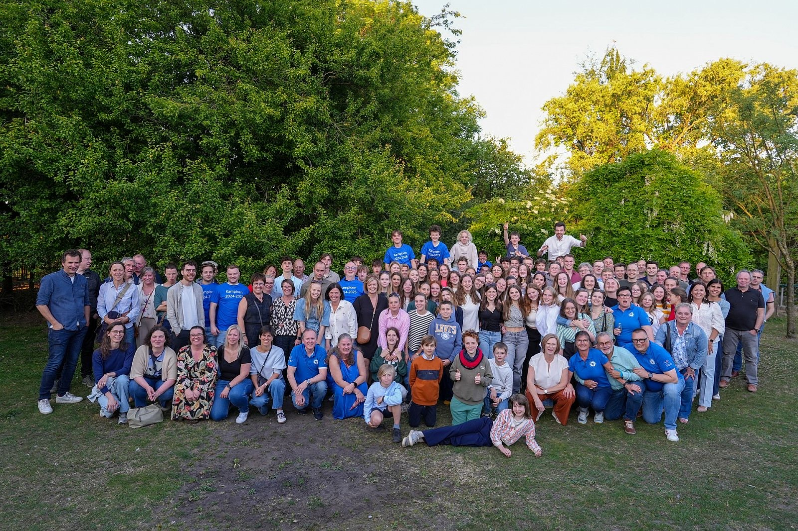
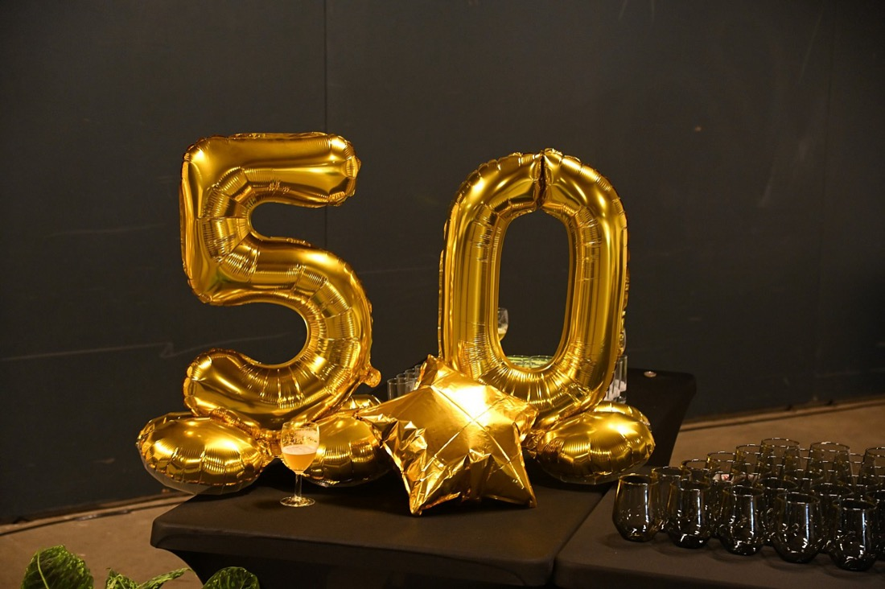

Welkom bij VC Kalken
Samen groeien.
Samen groeien.
Samen winnen.
Een warme volleybalclub in Kalken waar jeugd, dames, heren, recreanten en supporters elkaar vinden op én naast het veld.
20ploegen
300+leden
Deze week
Volledige kalender →Wedstrijden deze week
Wedstrijden worden geladen…
Ploegen
Alle ploegen bekijken →Vind snel je plek
Nieuws
Clubnieuws dat snel leesbaar is
Belangrijke berichten verschijnen in duidelijke kaarten met datum, categorie en een korte samenvatting — zodat je in één oogopslag weet wat er leeft in de club.

Uitgelicht
VC Kalken viert 50 jaar
Een halve eeuw volleybal in Kalken! We vierden ons gouden jubileum met een gala-avond en een groot eindeseizoensfeest met de hele clubfamilie.
Identiteit
Meer dan een volleybalclub
VC Kalken wil een plek zijn waar spelers groeien, trainers begeleiden, supporters verbinden en vrijwilligers het verschil maken. Sportief én warm.
WarmIedereen voelt zich hier welkom.
SportiefTrainingskwaliteit, ambitie en fair play.
VerbondenPloegen, supporters en vrijwilligers samen.
Klaar om te starten?
Kom een keer gratis meetrainen
Of je nu 7 of 47 bent, beginner of ervaren: er is altijd een ploeg die bij je past. Vraag vrijblijvend een proeftraining aan.